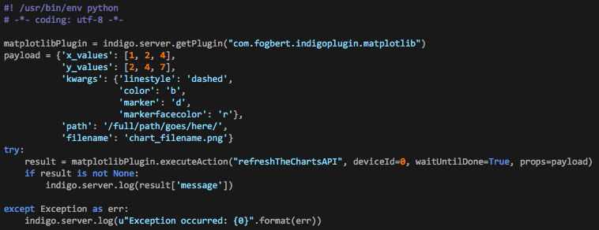

The Matplotlib plugin allows users to easily create attractive charts for display on Indigo Home Control Server control pages. The plugin also includes a facility to create necessary CSV data for display.
Highlights:
The Matplotlib plugin is designed to make creating visually appealing charts for Indigo control pages easy. Many of the chart attributes, such as background color, font styles and chart size can be managed centrally--for example, you can change the background color of all your charts simultaneously. You can add additional customizations to each individual chart if you like, such as overriding the default chart size or displaying a chart legend only on selected charts. The overriding emphasis in designing the plugin is simplicity. The instructions below seem like a lot, but almost all of the settings can be left at their default when you begin. It's probably best to read through all these instructions before getting started.

Installation is easy. Download and extract the Indigo Plugin file onto your Indigo server machine. Double-click the plugin file and follow the prompts. The plugin configuration dialog is the first place that you will land after you install the plugin for the first time. Chances are that you will be able to leave most of these settings alone when you begin; however, if you choose to make adjustments, helpful information for most settings can be found by hovering your cursor over the selected field (this applies to device dialogs as well). The configuration menu looks like this:
This is where the plugin will look for data to chart. The plugin can plot your CSV data or if you choose, the plugin can create CSV data files for you (more on the data in a bit). The specified folder must be visible to the server at all times.
This is the folder where the plugin will save the image files it creates. If the default folder is used, the images will be automatically available in the Indigo control page editor.
How often the plugin will generate new CSV data (if applicable) and a new version of your charts.
The resolution of the image files (in DPI). The default is 100 and will probably work just fine for most users.
The default sizes for each type of chart (in pixels). Square charts only need one value which is used for length and width. There are two size settings for rectangular charts to allow for multiple sizes to be used. Size 1 will be used as the "default" and you can override with size 2 in the device preferences. This second setting (size 2 can also be used for an additional size for square charts; simply set height and width to the same value. Rectangular and square charts also have a setting to override system-wide dimension settings on a device by device basis. The minimum size value is 75 pixels, but that limit can be reduced in a future update if there is demand for smaller chart objects.
These control the look and feel of all of your charts. A note about colors. You can use the standard palette of colors or--if you enable the feature in advanced settings--you can select "Custom". if you select "Custom", a new field will appear for you to enter your custom color. These values are HTML color values (see the image above for an example) or standard color names (like Blue or Green). There is also an additional color option for the chart background and the cart canvas which allows these values to be transparent.
The plugin takes advantage of Indigo 7's enhanced debug logging facility. The default for logging is "Warning" which will alert you only to issues that you may want to address. Select "Informational Messages" to see select notifications of plugin activity. The logging levels are inclusive of "higher" levels. In other words, if you set the level to Informational Messages, you'll also receive all Warnings, Errors and Critical messages.
Presently, the plugin contains functionality for several charting system devices including:
CSV Data - Once you set and save your overall plugin settings, the next thing that you might want to do is generate some data for your charts. This is done using the plugin's built-in CSV Data Engine device type. To establish your CSV Engine, create a new Indigo Device, select Matplotlib as the device type and CSV Engine as the device model.
For each data element, you must add three things: a title, a device (or variable) ID, and a device state (or variable value).
To add your first data element, enter the Title and then select the appropriate Device (or Variable) ID from the dropdown menu. The Data dropdown list will then be automatically populated with potential values to chart. Select your target value from the list of available items and click Add Item. Please note that the Data dropdown list will show all potential data sources related to the device--many of which may not be suited to charting (like text strings). You can repeat this process to add more data elements, but please note that things you add are not fully committed until you hit the save button.
Use the second configuration area to modify or delete existing data elements. Select the item that you want to modify from the Item List dropdown and the fields below will populate with information about the data element. You can change any or all of the information fields as desired. Once finished, click the Update Item button. You can change as many items as you like. If you change a data element's Title within the CSV Engine, it will create a new data file and begin logging data from scratch. If you choose to delete a data element, select it and then click the Delete Item button. Again, changes will not be fully committed until you select save.
It is also possible to add your own CSV data files directly to the designated data folder (if the files are properly formatted, they will work just fine) but only CSV data generated by the plugin can be managed with the CSV Engine device. If you use your own files, you need to manage them some other way. If you choose to use the CSV Engine feature, you only need to create one CSV engine device for your entire installation. If you choose to add additional data elements, add them using the same procedure and add them to the same CSV Engine device. After you add your data elements, it will take some time for the chartable data to be generated. The first observation will be added the next time the plugin cycles (which is set in the plugin configuration dialog above). Each time the plugin cycles, it will first add a new observation to the data file and then it will build new charts (to ensure the most recent observations are included in the charts).

If you are successful, the plugin will generate simple CSV data files like the one to the right. The plugin expects a certain structure for the data files it uses, so if you choose to include your own CSV data, your files should contain the following:
%Y-%m-%d %H:%M:%S.%f ), and
Important! Each data file should contain only one data element. In other words, each item that you plan to chart should have its own unique data source.

Your First Plot - Once you have some data to chart, it's time to create your first plot. Plots are built using Matplotlib Plugin Charting Devices, and each plot is managed by its own device instance. Create a new device and enter the configuration dialog. Most of these settings are available on multiple chart types and generally behave in the same way. For illustration, here are the settings for the line chart type.
Here, we just enter the full name of the chart--something like: chart_illumination.png. You shouldn't include a path, that is set in the main plugin configuration dialog.
Sometimes, you might want the size of your chart to be different than the standard size (larger or smaller than the standard chart width specified in the plugin preferences). To force the chart to be drawn with Size 2, check this box (this size is set in the plugin preferences.
Sometimes, you might want a special size for your chart that doesn't conform to either the standard size or the extra wide size. Use these fields to specify a one-off size for this chart. If values are entered here, they will override all other size settings. If you later change your mind, set the value to 'None'. Note that if you leave the setting blank, the plugin will attempt to fix the setting for you. Also note that it is not necessary to set both values. You can choose to set only height or width and leave the other as None.
It is sometimes necessary to make adjustments to your charts when they are going to be viewed on retina and non-retina displays. Fonts are especially sensitive to size depending on the target display. Setting a custom font size can help manage the difference. It is often best to create a chart device for your preferred display, duplicate it, and then adjust the font settings for the other display resolution.
Check this box to include a legend in your chart. Note that if you also have X Axis labels (see below) the axis label will be suppressed when the legend is turned on (both would try to vie for the same real estate.
your chart title can be any valid string (including unicode characters). If you would prefer not to have a title associated with your chart, leave the field blank. If you enter 'None', your chart will literally have None as its title.
the axis controls area contains settings for the X and Y axes.
controls that affect the horizontal X axis:
the grid control specifies whether a vertical grid will be applied to the chart. If enabled, a vertical line will be charted at every major tick. Note that the style of grid line is established within the plugin preferences dialog.
the axis title control specifies the label that will be applied to the X axis. Note that if the chart's legend has been enabled (see above) the label entered here will be suppressed (both will fight for the same real estate).
the format control specifies the format of the label that will be applied to the major tick marks along the X axis. Choose the label that makes the most sense for your particular case.
the scale control specifies how often a major tick mark will be placed on your chart. For example, if you choose one tick per day (Every Day) a new tick mark will be placed at the start of a new day.
controls that affect the vertical Y axis:
the grid control specifies whether a horizontal grid will be applied to the chart. If enabled, a horizontal line will be charted at every major tick. Note that the style of grid line is established within the plugin preferences dialog.
the axis title control specifies the label that will be applied to the Y axis.
the axis min control will limit the lower boundary of the Y axis. If None is specified, the plugin will manage the lower boundary automatically.
the axis max control will limit the upper boundary of the Y axis. If None is specified, the plugin will manage the upper boundary automatically.
if this setting is enabled, the left-side Y axis tick labels (the values) will be mirrored on the Y2 axis.
the precision control will affect the precision of the values placed along the Y axis.
the tick labels setting will control the labels used for the tick marks on the Y axis. Whatever you enter here will be applied to the tick marks (in order, starting from the bottom). In order to use custom tick labels, you must also use custom tick locations. If you don't specify anything in the tick locations field, the custom tick labels field will be ignored.
the tick locations setting will control the placement of the tick marks on the Y axis. For example, if you were charting wind direction, matplotlib might automatically place tick marks every 50 degrees. While accurate, it's not particularly helpful or visually appealing. Therefore, with this setting you could choose to only place tick marks at 0, 90, 180, 270, 360 degrees. The plugin will then only plot tick marks at these values. If you do not specify custom tick locations, matplotlib will do its best to place them for you.
the line controls area contains settings for the lines of your chart. Up to four lines can be added to a single chart. Each line control area contains the same settings.
the data source control specifies the data to be charted. All valid CSV data elements contained within the data folder will be available in this list.
annotations will place the value of the data point as a label on the chart (for each observation). Caution - use this setting sparingly as too many annotations make for ugly charts.
if enabled, the fill control will cause the area under the line to be filled with the same color as the line color (but with some transparency.
the line color dropdown list specifies the color that you would like for each line.
if you choose a line color setting of "Custom", you will enable an additional control to allow custom colors to be specified. Custom colors must be specified using
standard HEX color specifier. A good starting point for ideas is Wikipedia. Be sure to look at the HEX
specifier associated with your desired color (it will look something like: #123456). Custom colors will not be available within the plugin until they
have been enabled in the Advanced Settings dialog.
any text included here will be used as the legend label for this line. The field must be empty for the default label to be used. Entering a space here will cause no label to be displayed (technically, a space will be displayed).
the line style dropdown list specifies the type of line that you would like for each line.
if a marker is specified, this setting will control the color of the marker. Custom marker colors are supported.
if a marker is desired for each observation, select the style from the dropdown list.
If enabled, the plot min control will put a horizontal line on the chart at the minimum value. Note that this will be the minimum value of the data reflected in the chart, and not necessarily the minimum value of the data contained within the CSV file.
If enabled, the plot max control will put a horizontal line on the chart at the maximum value. Note that this will be the maximum value of the data reflected in the chart, and not necessarily the maximum value of the data contained within the CSV file.
Custom line segments allow you to add extra lines to a chart. Custom line segments will not be available within the plugin until they have been enabled in the Advanced Settings dialog.
These line segments (if enabled) require value pairs: a value to chart (integer or float) and a color. The values must entered as tuples and separated by commas when
there is more than one. For example, an entry like this: (123.4, 'blue'), (234.5, 'green') will cause two horizontal lines to be added to your chart.
Single segment entries must still be entered as a tuple (see image).
Example: On a weather forecast chart, you might want a line to denote a freeze threshold. Such a threshold could be done thusly: (32.0, 'blue') or
(0.0, 'blue') (see 10 Day Forecast Image below).
Click on the line style dropdown list to specify the type of line that you would like for your custom line segment.
Beyond the standard line chart type, there are other chart device types.
These charts are designed to work directly (and only) with WUnderground Plugin 10 Day Forecast devices (see below).
These charts are designed to work directly (and only) with WUnderground Plugin 24 Hour Forecast devices.
Bar chart devices are like line charts, except the data points are charted with typical bars. These chart types are typically better for plots with fewer observations.
Calendar devices are used to create images that represent a typical calendar month for display on control pages.
Polar charts are used to plot directional data like wind. The charts are capable of plotting both speed and direction on the same chart.
Some fields require a valid value or the value 'None'. For example, a custom width value must either be a valid value in pixels or None. A blank will cause an error. If there's a problem, the plugin will try to fix the error for you. Other things can be blank -- like a title -- because entering 'None' will generate a title 'None'.
 Important! Note that any changes made to the settings for a particular charting device will not be reflected in your charts
until the plugin refreshes them at the next refresh point. If you would like to see your changes reflected immediately, please select "Redraw Charts Now" from the plugin menu.
Important! Note that any changes made to the settings for a particular charting device will not be reflected in your charts
until the plugin refreshes them at the next refresh point. If you would like to see your changes reflected immediately, please select "Redraw Charts Now" from the plugin menu.
There is one plugin action.
Invoking this action item will cause all chart devices to refresh their images. It will not cause a new data observation to be saved to CSV Engine data elements (reloading the plugin to redraw the charts will cause a new observation to be saved.
There are several plugin menu items.
Select this option to set several items which affect the functionality of the plugin. These options are generally straightforward.
Adds controls to plot with user-defined colors. If later disabled, previously defined colors will still be used until a new color is selected. The plugin is limited to standard color options until this setting is enabled.
If enabled, this setting will allow you to plot custom lines on charts at user-specified values and with user-defined colors. This feature is useful if you want to add a freeze warning line to a weather chart, for example. Custom line segments are not available until this setting is enabled.
If enabled, chart ranges will be expanded to display custom line segments at all times. If disabled, custom line segments will only be displayed if they are within range of plotted data. Adds controls to plot user-defined line segments. If later disabled, previously defined segments will be ignored (the settings will be retained and hidden). If selected, the chart's Y axis will be expanded to ensure that the custom value is always visible.
if selected, this will cause all expandable menu sections to be minimized when first opened, even if they were left expanded when the dialog was last closed.
For a clean look, the plugin default is to plot "invisible" origin lines when charts contain both positive and negative values. Enable this setting to force origin lines to be displayed. If selected, the chart's Y origin line will be displayed when charted values include both positive and negative values. Otherwise, no line will be plotted for the X axis at Y = 0.
selecting this option will cause all charts to be redrawn; however, it will not cause a new set of data to be saved to any CSV Engine data elements.
will reach out to determine whether you are running the most recent version of the plugin.
provides some information about the matplotlib program itself (not the plugin, but the underlying code that does the actual hard work).
Under construction.
The bundle identifier for the Matplotlib plugin is: com.fogbert.indigoplugin.matplotlib
the plugin now sports experimental API that will be expanded over time (and become less experimental over time, too). This can be used by scripters to send data to generate charts. The following is a rudimentary example. All payload elements are required; however, you are not required to specify chart properties through a kwargs element. If you choose not to specify any kwarg properties, you must still send an empty dictionary. One last note, the format of the elements is important. The X and Y values must be presented as lists. The kwargs argument must be presented as a valid dictionary (as does the entire payload). The path argument is the full path where you would like the image to be saved.
 The return is a dictionary that will contain information about the success/failure of the API call. Presently, there are two items in the return: 'success' and 'message'. 'success' will either be True or False which can be used to detect whether the call to the plugin was a success.
For help interacting with Matplotlib directly, try the matplotlib documentation. Note that Apple tends to be several versions behind so there will be things in the current version of the matplotlib docs that will be unavailable through the plugin.
You can also modify the Matplotlib style sheet (located within the plugin package). Note that the plugin necessarily modifies some of these parameters and your changes may be ignored. You should only attempt this if you know what you're doing (backup your changes as this file will be overwritten by newer versions of the plugin).
the Matplotlib Parameters Device a special device type which is not used for generating charts. It is used as a repository that holds the initial matplotlibrc configuration settings so that you can see at a glance the initial parameters that the plugin uses before any customizations are applied. There are no settings or configurations for the Matplotlib Parameters device.
Here are a few examples of charts that were created with the plugin (the border around the outside of the image was added to show the boundary of the image for this page).